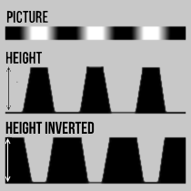
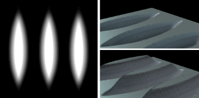
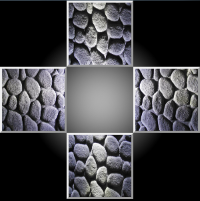
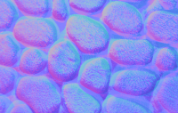

Mapa de altura

Essa textura contém a distância "altura" do "piso".
Quanto mais brilhante o pixel, mais distante (mais profundidade).
Nesta aplicação, não importa se os valores são invertidos, pois você pode alterá-lo a qualquer momento posteriormente.
A coisa mais importante, porém, é a diferença de valor entre os pixels.
Ideal é uma textura com dimensões de pixel com uma potência de 2 (2, 4, 8, ..., 256, 512 etc.)
Se você estiver usando um mapa de altura como um mapa de deslocamento,
você pode ver facilmente os efeitos na superfície.
Um exemplo de mapa de altura (esquerda), saliências entrando (canto superior direito)
e solavancos saindo (canto inferior direito) são mostrados na imagem abaixo.

NormalMapas das fotos
Para gerar mapas normais a partir de fotos, você precisa de quatro fotos específicas da mesma superfície. Cada imagem precisa de uma posição de iluminação diferente.
A luz deve brilhar da parte superior, esquerda, direita e inferior da imagem.
Para isso, você precisa de uma câmera simples, uma lanterna e, opcionalmente, um tripé.
Se você não usar um tripé, provavelmente precisará alinhar e cortar as fotos antes de usá-las.
Arraste e solte as imagens nas quatro posições dentro da janela de visualização esquerda.
Você também pode clicar em cada imagem para selecionar um arquivo.
Lembre-se de que a origem da luz, mostrada dentro da janela de exibição, está no centro!
Além disso, todas as quatro fotos devem ter a mesma resolução.


Como resultado, um mapa normal bastante decente é gerado a partir das fotos (do meu tapete de banho ...).
Reajuste os valores posteriormente para obter melhores resultados.
Atenção:
Tente capturar a superfície com um tripé e não se esqueça de capturar uma imagem adicional para o mapa difuso!